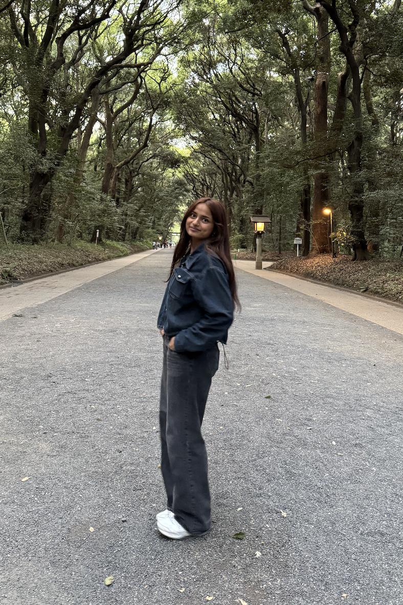
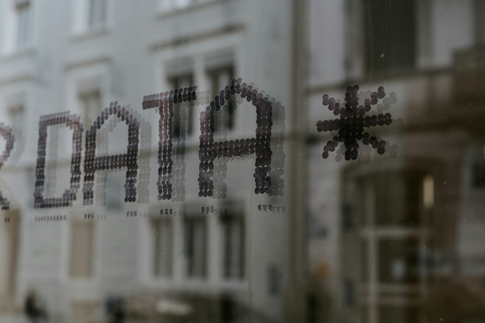
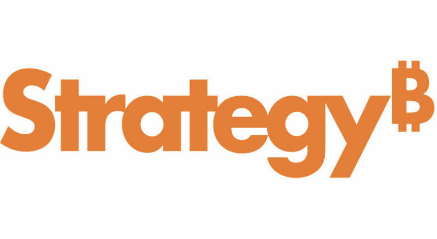

Hi! I'm Arthi Bhoomireddy.
This is my portfolio, a showcase of my projects, experience, and interests.

This is my portfolio, a showcase of my projects, experience, and interests.
Hi! I'm Arthi Bhoomireddy, an Applied Computer Science student at George Mason University with a minor in Computational Data Sciences. This site is a space to share the parts of my journey that do not always fit on my resume, but still reflect who I am as a student, developer, and problem solver.
I am interested in software development, cloud technologies, data science, and the ways technology can be used to improve existing processes. Whether I am working on a personal coding project or developing automation for an engineering team, I enjoy breaking down complex problems and creating solutions that are reliable and useful.
My goal is to grow into a role where I can continue learning, solve meaningful technical problems, and contribute to products and systems that create a measurable impact.
In my free time, you might find me reading, trying new dessert recipes, or watching a new anime. Feel free to take a look around. I would love to connect!



Professional experience applying software, cloud, and automation skills to real engineering challenges.

Strategy
Tysons, Virginia
June 2026 to August 2026
During my internship at Strategy, I worked on automating a core file retrieval process used by engineering and customer support teams. Before the project, engineers had to manually gather crash information, connect to customer environments, locate large core files, and transfer them through several systems. Depending on team availability and the customer environment, the process could take hours or even days.
I helped design and develop an automated workflow that connected several internal tools and cloud services. I built a Python utility that used hostnames, process identifiers, and support case numbers to locate core files on customer Amazon EC2 instances and upload them to Amazon S3. I then created an Ansible Automation Platform job template and playbook that allowed engineering teams to launch the retrieval process using consistent inputs.
I also extended an existing AWS Lambda crash reporting system by integrating the ServiceNow REST API. The integration automatically created support cases, included case numbers in Microsoft Teams alerts, and provided the information needed to trigger the next stage of automation.
For container environments, I developed an Argo Workflow that transferred files through Amazon S3 and into the company file sharing system. The workflow also updated the associated Jira ticket after the transfer was complete, giving support and engineering teams visibility into the process.
One of the parts of this experience I am most proud of was the initiative I took to learn the company's internal tools and existing processes. There was limited documentation for Ansible Automation Platform and Argo, so I created small test jobs and workflows to understand how each system operated before building the production automation. I also met with engineers across support, infrastructure, and development teams to understand their requirements, test edge cases, and improve the solution based on their feedback.
Python, AWS Lambda, Amazon EC2, Amazon S3, Ansible Automation Platform, Argo Workflows, ServiceNow REST API, Jira, Microsoft Teams, Linux, Bash, and PowerShell
Explore some of the applications I have designed and developed.
An artificial intelligence powered baking assistant that analyzes dessert ingredients and predicts whether a recipe will produce a cookie, cake, or brownie like texture.
Built using Python, Flask, the OpenAI API, JavaScript, HTML, CSS, and Figma.
A movie recommendation application that uses three user selected filters to retrieve a randomized movie recommendation from the TMDB API.
Built using Python, Flask, JavaScript, the TMDB API, HTML, and CSS.
Email: bhoomireddyarthi@gmail.com